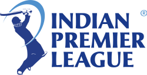

Indian Premier League
Article Talk
- Language
- DownloadPDF
- Watch
- Edit
The Indian Premier League (IPL), also officially known as TATA IPL for sponsorship reasons, is a professional men's Twenty20 cricket league, contested by ten teams based out of seven Indian cities and three Indian states.[1][2] The league was founded by the Board of Control for Cricket in India (BCCI) in 2007. It is usually held between March and May of every year and has an exclusive window in the ICC Future Tours Programme.[3]
The IPL is the most-attended cricket league in the world and in 2014 was ranked sixth by average attendance among all sports leagues.[4] In 2010, the IPL became the first sporting event in the world to be broadcast live on YouTube.[5][6] The brand value of the IPL in 2019 was ₹47,500 crore (US$5.9 billion), according to Duff & Phelps.[7] According to BCCI, the 2015 IPL season contributed ₹1,150 crore (US$140 million) to the GDP of the Indian economy.[8] The 2020 IPL season set a massive viewership record with 31.57 million average impressions and with an overall consumption increase of 23 per cent from the 2019 season.
There have been fifteen seasons of the IPL tournament. The current IPL title holder franchise is Gujarat Titans, winning the 2022 season.
Indian Premier League |
|
|---|---|
|  | |
| Countries | India |
| Administrator | Board of Control for Cricket in India |